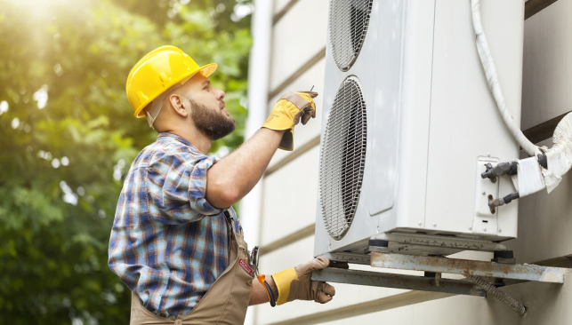
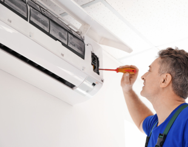

Kondisionerlərin sıradan çıxma səbəbləri çoxsaylı ola bilər, lakin
bunlardan əsasları bir neçədir. Təmirə ehtiyac bir qayda olaraq
istehsal xətası və ya qaydalara riayət olunmadan quraşdırılma
nəticəsində ortaya çıxır.
Digər məşhur səbəblərə blokun zədələnməsi, düzgün olmayan istismar
və soyuducu mayenin (freon qazlarının) sızması aiddir.
Bütün bu kimi hallarda nasazlığın aradan qaldırılması ilə
mütəxəssis məşğul olmalıdır.Müstəqil surətdə (özbaşına) nöqsanı
aradan qaldırmaq üçün cəhd daha ciddi problemlərə gətirib çıxara
bilər.
Müasir texniki xidmət sonrakı əsaslı təmir zərurətindən xilas
olmağa imkan verir.
Əgər təmir əsl peşəkarlar tərəfindən aprılırsa, nasazlığın səbəbi
müasir diaqnostik avadanlığın köməyilə müəyyən edilir, sonra isə
tez və effektiv şəkildə aradan qaldırılır.
Bənzər işlərin siyahısında xarici blokun təmizlənməsi, soyuducu
mayenin normaya uyğun sistemə vurulması, kompressorun, filtrin,
istilik mübadiləsi qurğusunun və s. dəyişdirilməsi ola bilər.
Əgər oxşar nasazlıq sizin kondisionerinizdə baş veribsə,bu halda
onun aradan qaldırılmasını uzun müddətə təxirə salmayın və isti
havanın sizə əziyyət verməsinə icazə verməyin. "Soliton Service"
şirkətinin mütəxəssisləri çox qısa zaman ərzində sıradan çıxmış
kondisionerlərin təmirini həyata keçirəcək.
Qeyd edək ki, havanın temperaturu yay vaxtlarında nə qədər
istidirsə kondisionerlərin sıradan çıxma halları bir o qədər çox
baş verir.Münasib olmayan vaxtda kondisionerin təcili təmirinə
ehtiyac olmasın deyə hər bir kondisioner sahibi nasazlığa gətirib
çıxaran səbəbləri bilməlidir.
Kondisionerlərin nasazlığının beş əsas səbəbi:
1. Ən çox təsadüf edilən hal – daxili blokda filtrlərin
çirklənməsi. Kondisionerin panelinə qurulan tor onun soyuducu
radiatorunu tozdan qorumaq üçün təyin edilib. Filtrlərin
təmizlənməsinə ehtiyac olmasını aşağıdakı əlamətlərə əsasən
müəyyən etmək olar:
- Məkanın soyudulması nəzərəçarpacaq dərəcədə zəifləyib.
-
Kondisionerin qoşulması anında ondan su damcılamağa başlayır.
Buna səbəb soyuducu sistemdə baş verən çirklənmə nəticəsində
borunun donmasıdır (buz bağlaması).
-
Əgər su sadəcə damcılamır ,məsələn axırsa – bu şübhəsiz təkcə
filtrlərin yox həm də drenaj sisteminin tutulmasının əlamətidir.
Təcili olaraq kondisionerlərin təmirini həyata keçirən usta
çağırmaq və split sistemə texniki xidmət göstərmək lazımdır.
2.Kompressorda freon qaz sızmasının baş verməsi nəticəsində
soyutmanın zəifləməsi və ya heç olmaması.Sızma boruda olan mikro
(xırda) çatlardan və onun birləşmə yerindən baş verə bilər.Əgər
kondisionerin filtrlərini müstəqil şəkildə təmizləmək olarsa,
soyuducu mayenin səviyyəsinin ölçülməsi yalnız lazımi cihazları
olan mütəxəssis tərəfindən aparıla bilər. Freon səviyyəsinin
yoxlanıması yarım ildə bir dəfə keçirilir, yenidən doldurulma ən
gec halda on səkkiz aydan bir olmasa,kondisionerin təmirə ehtiyacı
ola bilər. Soyuducu mayenin çatışmaması split sistem üçün
məhvedici ola bilər. Kompressor həddən artıq qızacaq və
kilidlənəcək və sadəcə olaraq sıradan çıxacaq. Kompressor soyuducu
qurğunu təşkil edən əsas hissədir. Kondisionerlərin
kompressorlarının dəyişdirilməsi ilə aparılan təmir isə əlbəttə
ki, daha baha başa gəlir.
Freon çatışmamazlığının ilkin əlamətləri:
- Havanın pis soyudulması
-
Havanın pis soyudulması Boruların birləşmə yerində buzun və
qırovun əmələ gəlməsi
3.Kondisionerlərin planlaşdırılmamış təmiri split sistemin gücünün
düzgün nəzərə alınmaması zamanı lazım ola bilər. Bir çoxları hesab
edir ki, az güclü aqreqat daimi qoşulma vəziyyətində olarsa
istənilən məkanı soyuda bilər. Bu çox geniş yayılmış bir səhv
fikirdir, hansı ki, kondisioner üçün yalnız qabaqcadan təxmin
oluna bilən bir nəticəni verə bilər - sıradan çıxma.
Mütəxəssislərin müəyyən məkan üçün lazım olan gücdə kondisioneri
yüksək dəqiqliklə müəyyən etmələri üçün xüsusi formullar
mövcuddur. Hər hansı bir insan əgər bilirsə ki, gücün hər bir
kilovattı təxminən otuz kubmetrə uyğundur, daha sadə, on kvadrat
metr sahəyə uyğundur onda o asanlıqla otağa uyğun split sistemi
seçə bilər.
Ən etibarlı variant: kondisioner almağa hazırlaşarkən məkanı
nəzərdən keçirərək sizə daha uyğun cihaz seçimində məsləhət
verəcək mütəxəssis çağırın. “Solton Service” şirkətinin
konsultantları sizə nəinki düzgün kondisioner seçməyə kömək
edəcəklər eləcə də qurğunun qurulması üçün optimal yeri
göstərəcəklər, harada ki ,o daha effektiv işləməklə bərabər gözəl
görünəcək.
4.Hətta əgər filtrlərin təmizlənməsi vaxtında edilsə, freon
səviyyəsi nəzarətdə saxlanılsa, artıq yüklənmə olmadan istismar
olunsa belə elə bir yeganə şərt var ki,onun yerinə yetirilməməsi
bütün görülən tədbirlərin üstündən xətt çəkərək yenə də
kondisionerin təmirinə ehtiyac yaradacaq. Bu kondisonerin qeyri
peşəkar ustalar tərəfindən düzgün quraşdırılmamasıdır. Özbaşına və
ya qeyri peşəkar quraşdırma onsuzda peşəkarların çağırılmasına
gətirib çıxaracaq.
Soyuducu avadanlığın düzgün qoşulması və quraşdırılması, onun uzun
müddətli və fasiləsiz işləməsinin təminatıdır. Həm də split
sistemin özbaşına quraşdırılması halında zəmanət nəzərdə tutulmur.
Hətta kondisionerlərin istənilən ən xırda təmiri belə yalnız
peşəkar tərəfindən aparıla bilər. Split sistemin bütün
hissələrinin (detallarının) və aqreqatlarının vəziyyətinin
müntəzəm profilaktik müayinəsinə laqeydlik göstərmək lazım deyil.
Ancaq istismar şəraitinə tam əməl olunma kondisionerin təmir
vaxtını maksimum uzaqlaşdırmağa kömək edər, amma əgər birdən buna
ehtiyac olarsa şirkətimizin mütəxəssisləri bunu ən qısa zaman
ərzində yüksək keyfiyyətlə həyata keçirəcəklər.

Kondisionerin zəmanətli təmiri və onun xüsusiyyətləri
İstənilən texnika sıradan çıxa bilər. Kondisionerlər istisna
deyil və onların təmiri sahibi üçün ən böyük problemə
çevrilir. Hansı hallarda kondisionerlərin zəmanətli təmiri
nəzərdə tutular, hansılarda isə adi (zəmanətsiz), bunu necə
ayırd etmək lazımdır?
Və ən əsası – zəmanətli təmir özündə nə ehtiva edir?
Texnikanın zəmanətli təmiri o halda aparılır ki, alıcının
kondisioner üçün zəmanət talonu var və quraşdırılma düzgün yerinə
yetirilib.
Lakin elə nasazlıqlar var ki,onlara zəmanət şamil olunmur.
-
drenaj sistemlərinin çirkdən və buz tıxaclarından təmizlənməsi
-
daxili istilik mübadiləsi qurğusunun və hava filtrlərinin
çirkdən və kənar cisimlərdən təmizlənməsi
-
idarəetmə pultunun batareyalarının yenisi ilə əvəz olunması
-
elektrik enerjisində baş verən sıçrama nəticəsində yaranan
nasazlıq (qəfil dayanma) və ya düzgün olmayan istismar
nəticəsində yaranan nasazlıqlar.
Əlbəttə, kondisionerin təmiri nasaz texnikanı bərpa etməyə kömək
edəcək, lakin hər zaman əsas qaydanı yadda saxlamaq lazımdır – o
məişət texnikası daha çöx sizlərə xidmət göstərir ki,düzgün
isitismar qaydalarına riayət edilir!